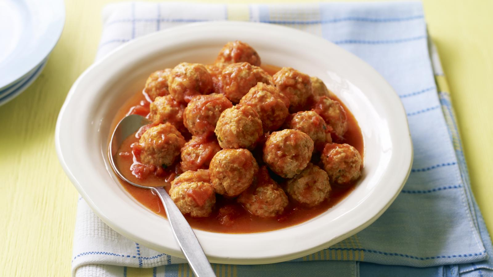

Turkey meatballs

Description
Nigella's turkey meatballs are light and succulent, as well as being lower in fat. Make a batch – half for tea and half to be frozen for future outings.
Ingredients
- 500g/1lb 2oz turkey mince
- 1 free-range egg
- 3 tbsp breadcrumbs
Steps
- For the meatballs, put all the ingredients for the meatballs, including the reserved chopped onion and celery, and salt according to preference, into a large bowl and gently mix together with your hands. Don’t overmix, as that will make the meatballs dense-textured and heavy.
- Drop the meatballs gently into the simmering sauce; I try to let these fall in concentric circles working round the pan from the outside edge inwards, in the vaguest of fashions.
- Let the meatballs simmer in the sauce for 30 minutes, or until cooked through. Serve with rice, pasta, couscous or however you so please.
Home